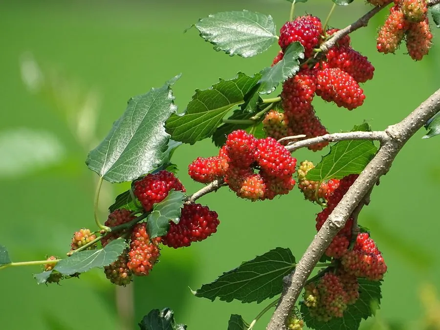

农作物与经济植物 · 植物界
桑树 Morus alba

桑树的叶片是家蚕的主要饲料，果实桑葚可食，皮可造纸，是蚕桑业的基础树种，栽培历史逾五千年。
- 分类
- 门被子植物门纲双子叶植物纲目蔷薇目科桑科属桑属
- 栖息环境
- 温带与亚热带的山坡、田边与庭院，适应性极强
- 地理分布
- 原产中国，现广泛栽培于中国、印度、日本及东南亚等地
- 保护级别
- 暂无评估（栽培作物）
物种志
桑树是桑科落叶乔木或灌木，高可达 10 m，树皮灰褐色、纵裂。叶片卵形或宽卵形，边缘有粗锯齿，有时分裂，表面无毛、背面脉腋有毛，叶柄长。花单性，雌雄异株或同株，柔荑花序。果实为聚花果，即桑葚，长圆形，成熟时紫黑色、红色或白色，酸甜多汁。
桑树原产中国，栽培历史已有 5000 多年，是蚕桑业的物质基础，也是重要的经济树种。它喜温暖、光照充足，耐旱、耐寒、耐修剪，适应性强，对土壤要求不严。桑叶是家蚕的主要饲料，养蚕缫丝造就了丝绸之路；桑葚可鲜食、制干、酿酒，富含维生素和花青素；桑树皮纤维可造纸，桑枝可作菌菇培养料，根皮、叶、果均可入药。中国是世界上最大的蚕丝生产国，桑树在南方蚕区广泛种植。
形态与习性
- 树高可达 10 m
- 叶卵形，边缘有粗锯齿
- 花单性，柔荑花序
- 果实聚花果（桑葚），紫黑或红色
- 用途养蚕饲料、桑葚、造纸
- 适应性耐旱耐寒耐修剪
趣味知识
- 桑叶是家蚕的饲料，中国养蚕缫丝的历史已有数千年。
- 桑葚是桑树的聚花果，成熟后酸甜多汁，可鲜食也可酿酒。
- 桑树皮纤维可造纸，桑枝可作菌菇培养料，浑身是宝。